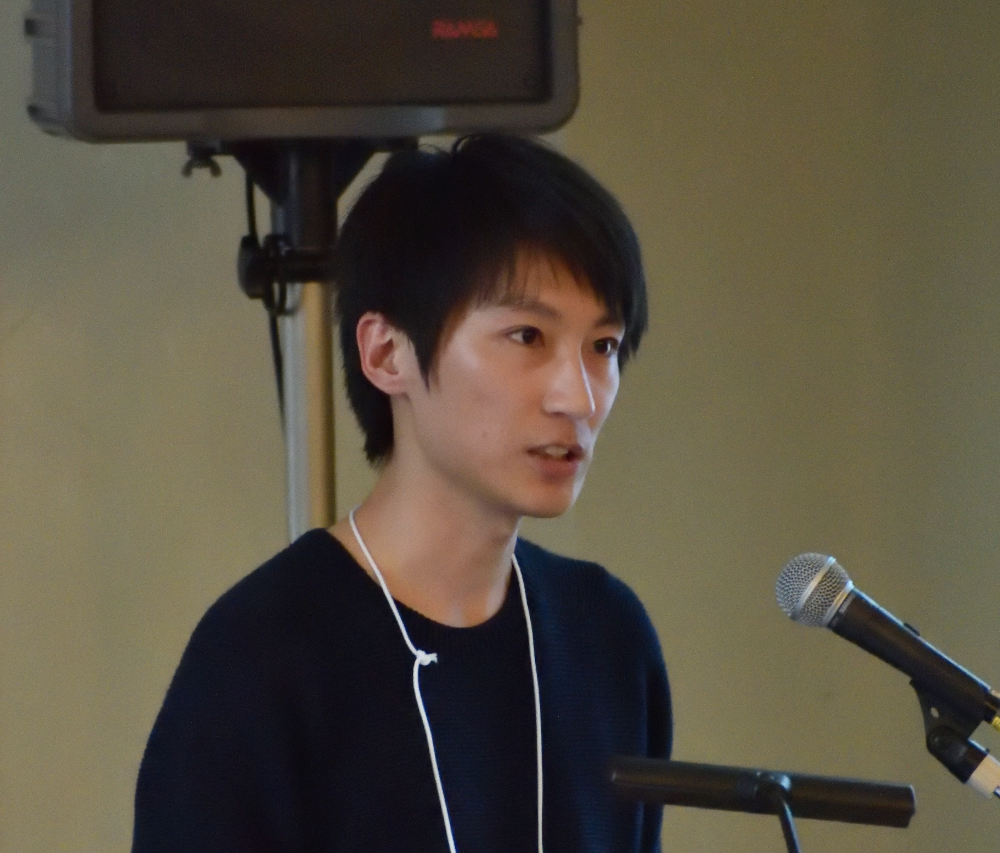

I am a researcher and engineer in natural language processing, with a focus on education. My goal is to build AI that stays close to every learner — making education more open and more personal.
自然言語処理 × 教育を専門に、研究と社会実装の両軸で取り組んでいます。
